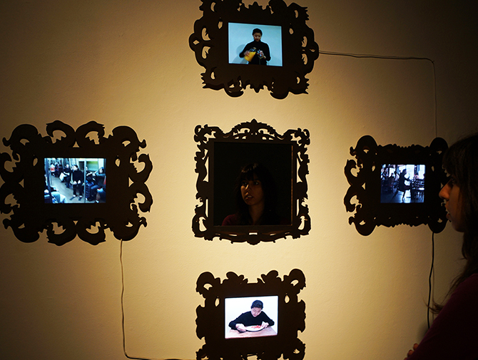
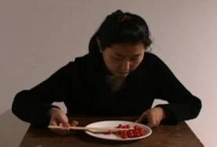
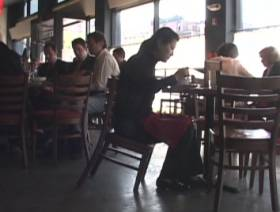
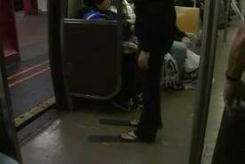
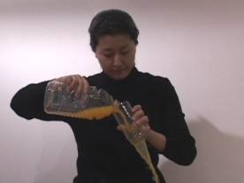
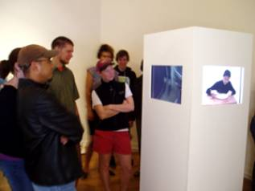
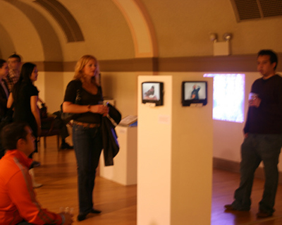
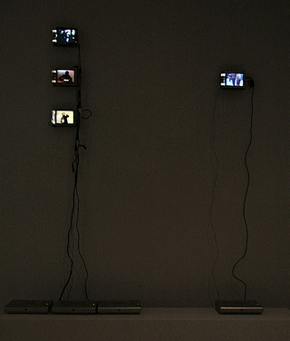

2014 October, Performance Four Single Channel Videos with a mirror
2006 May, Performance Four Single Channel Videos

Still Image
(Eating-Sitting-Drinking-Walking) clockwise
 
 
Video (Individuals)
Video (Compilations)
Museum Installation Picture
  
I explore feeling out-of-place in my installation Self-Portrait, which consists of four video projections sited in a hallway. In each projection I perform simple, everyday tasks, such as eating, drinking, and walking; however, in each situation, I have difficulty completing these tasks. With the first video, the spoon I use to eat a tomato is oddly-shaped and ineffective. With the second, my shoes are too long and prevent me from walking 'correctly.' And in the third, a hole at the bottom of my cup prevents me from drinking all my orange juice without splashing it onto me. In the last video sequence, I try to sit in a lopsided wooden chair.
In the videos, I seek to portray the difficulty of living in this 'room' that is America. Self-Portrait is an attempt to literally represent my psychological and bodily displacement as a means of representing the experience of immigration to non-immigrants. Since moving two years ago, I now feel as if I live in a different skin. Many of the simple tasks that seemed inborn to me in Korea are now completely foreign. My body, as a result, feels different. I feel like it occupies both Korea and the United States and my arms and legs feel incredibly elongated, as if I cannot see the end of my body. This space of being neither here in America nor there in Korea is precisely what I try to convey in Self-Portrait. In the video performances, I attempt to show what displacement feels like. Because the displacement one feels from immigrating is difficult and complex to communicate, I decide to demonstrate how one's daily, commonplace behaviors suddenly became unfamiliar. By performing these simple tasks gone awry and recording them on video, I escape from the hardship I have felt in the last couple years and I mentally escape from my struggles.
Exhibition
2012-2013 Japanese American National Museum, California, LA, California, LA
2012-2013 Asia Society Texas Center, Houston, TX
2011-2012 Smithsonian, National Portrait Gallery, Washington D.C.
2012 Jan, “Touching Anomaly”, 3rd Ward, Brooklyn, NY
2011 Jan, Buffalo Arts Studio, Buffalo, NY
2008 Dec, MISC Video & Performance, NY Studio Gallery, NYC
2008 Nov, The Chorus Project, Hun Gallery, NYC
2008 Nov, The Chorus Project, Korus House, Korea Embassy, Washington, DC
2008 Sep, Emerging Artist: Juried Screening, ISE Gallery, NYC
2008 Mar, Centennial video special , Crawl Space, Seattle
2007 Aug, Portraiture and Identity, Center For New Americans, NY
2006 Nov, Translation: Misguided Machines and Cultural Loops , Duo Gallery, NYC (curator. Christian Paul at Whitney Museum)
2006 Oct, LDN Vs NYC (Inflatable Collapsing New People from London and New York), NYC (curator. Karim Hamid)
2006 June, Community Folk Art Center , NY
2006 May, MFA Thesis Show , RISD Museum, RI
Media
2012 Apr, 20, SI APAP.edu, Recap and Video: Between Image and Word Symposium
2011 Oct, 12, PBS News Hour, Negotiating Asian-American Identity Through Portraiture, Reporter Saskia De Melker
2011 Sep, 23, VOANews.com, Asian-American Artists Explore Their Identity: Smithsonian exhibit, Julie Taboh
2011 Aug, 11, The Washington Post, Review: The Asian American experience at the National Portrait, Reporter Jachqueline Trescott (Website and New Paper)
2011 Jul, 12, National Portrait Gallery Official Website